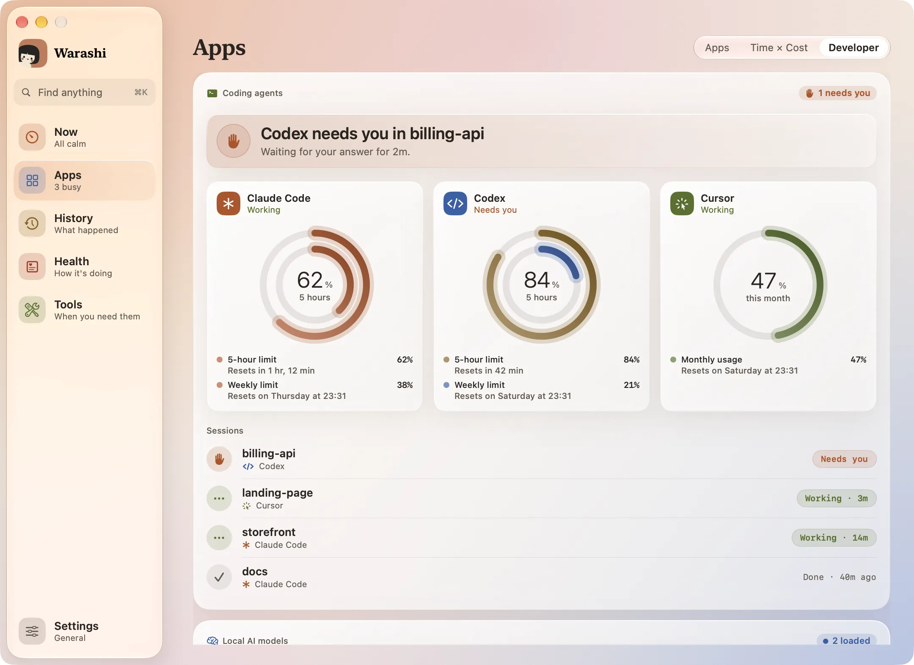

守护你 Mac 的精灵。
Warashi 留意你的 Mac，让电池保持年轻、磁盘保持清爽，出问题的那一刻就告诉你，也提醒你休息。一个安静的菜单栏 App，取代六个。
Apple silicon · macOS 26 或更高版本 · 免费 Beta · 无需账户


呵护 · 电池
停在 80%。
比一直停在 100% 的电池，老化慢上好几年。
清洁 · 清理
7.2 GB 可放心清理
App 缓存浏览器日志开发者
放松 · 休息
0:15
把目光从屏幕上移开。
体检
一切正常。
了解 · 警报
Google Chrome9.8 GB
内存快不够了。退出它，或者由它去。
了解 · 历史记录
14:02 为什么变慢了？
Xcode 占用了大部分处理器。
面向开发者
$ warashi agents Claude Code working · 62% left Codex done · my-app
了解
它对你的 Mac 了如指掌。
菜单栏里一个精灵和一个数字，刘海旁两个，每五秒一次读数，保存一年。事情发生时，Warashi 早已知道原因。


只说一次
失控的 App、内存不足、过热、磁盘快满了。
每个问题只提醒一次，附上依据和一件可做的事。
飞行日志 · 昨天
- 音乐让你的 Mac 保持唤醒达 55 分钟
- 你的 Mac 慢了 6 分钟 Xcode 占用了大部分处理器。
- Google Chrome 的内存正在快速增长 最近一小时增加了 1.35 GB。
- 已充到 100%，超过了你设的 80% 上限


呵护
它让你的 Mac 保持年轻。
电池保持在 80% 能多用好几年。每周一次体检，在问题造成损失前发现它。到了该换新 Mac 的时候，Warashi 清楚地知道你需要什么。


$249
在 Apple 更换一块已磨损的 MacBook Pro 电池的费用（保修期外）。电池长期停在 100% 且温度偏高，老化最快。


升级顾问
我的下一台 Mac 需要 32 GB 吗？
在记录你 30 天的真实使用之后，Warashi 会告诉你下一台 Mac 需要多少内存和储存空间，以及更快的芯片是否有帮助。有证据，而不是结账时的猜测。
清洁
它让你的磁盘保持清爽。
看看是什么占满了磁盘，一次清走会自己恢复的内容，并连同 App 留下的一切一起移除。所有内容都会移到废纸篓，所以不会因误操作而丢失任何东西。
清理
所有可能清走的内容，按需要多小心来分类。
- 可放心清理App 和浏览器缓存、日志、Xcode 的构建数据。它们会自己重新生成。7.2 GB
- 先看一下旧的安装器、下载内容的第二份副本、邮件的附件副本。1.4 GB
- 谨慎处理iPhone 和 iPad 的备份，它们可能是唯一的副本。38 GB


卸载器
把 App 彻底移除。
每个 App 及其留在你资源库里的内容，最久没打开的排在前面。还有多年前已移除的 App 留下的残留。
绝不碰你的文件
只有名称、大小和日期。
Warashi 从不打开任何文档。完全磁盘访问权限是可选的。
废纸篓
已清倒。释放了 4.8 GB。
废纸篓变大时提醒你，清倒时告诉你真实的数字。
放松
它也照看着你。
为你的眼睛和后背安排温和的休息，需要专注时让屏幕安静下来，也让 Mac 在工作需要的时间内一直保持唤醒。


保持唤醒
一小时，或直到工作完成，也可以合上盖子。
适合下载、构建或演示时。
小细节
- 网络和磁盘速度
- Wi‑Fi 质量
- 清洁时的黑屏
- 隐藏桌面图标
- 麦克风静音
- 全部推出


面向开发者
那个端口上运行的是什么？那个智能体消耗了多少？
Claude Code、Codex 和 Cursor：各自在做什么、你的额度还剩多少，需要你时会在刘海里提醒。按项目查看开发服务器，还有 Docker、载入内存的本地 AI 模型，以及你的工具留下的数 GB 空间。


warashi 命令
$ warashi explain 14:30 Memory ran short Swap rose from 1.2 GB to 8.6 GB. $ warashi apps --hours 3 Xcode CPU 37m 35s 9.4 GB Safari CPU 26m 22s 6.1 GB
还有一个可选的只读 MCP 连接，让 Claude、Cursor 和其他 AI App 可以根据你 Mac 的历史记录作答。除非你自己添加，否则不会分享任何内容。
一个安静的 App，取代过去满满一抽屉的 App。
Warashi 把这些工具各自最擅长的一件事放到了同一个地方，而且它还会记住。并非要贬低它们：它们把各自那件事做得很好。
| 你将获得 | Warashi | CleanMyMac | iStat Menus 7 | AlDente Pro | Amphetamine | coconutBattery |
|---|---|---|---|---|---|---|
| 菜单栏中的实时读数 | ✓ | ~一个菜单 | ✓ | – | – | – |
| 一年的历史记录，任何时刻都有解释 | ✓ | – | ~有历史记录，无解释 | – | – | – |
| 充电上限、充满电、定时安排 | ✓ | – | – | ✓ | – | – |
| 逐月的电池健康度 | ✓ | – | – | ~ | – | ✓ |
| 保持唤醒，即使合上盖子 | ✓ | – | – | – | ✓ | – |
| 卸载器、残留、大文件、下载 | ✓ | ✓ | – | – | – | – |
| 安全与备份体检 | ✓ | ~恶意软件扫描 | – | – | – | – |
| 休息和坐姿提醒 | ✓ | – | – | – | – | – |
| 电力流向，以及每个 App 的消耗 | ✓ | – | ~读数 | – | – | – |
| 价格 | 免费 Beta1.0 起一次性购买 | $39.95每年 | $11.99一次性 | €11.49每年，或 €23.99 一次性 | 免费 | €9.95一次性，Plus 版 |
≈ $75每年，首年价
这五个加起来的价格，单台 Mac。还有五个菜单栏项目、五个更新器、五套设置。
$0Warashi Beta 测试期间
Warashi 1.0 将为一次性购买。永不订阅。你的历史记录和设置都会保留。
价格来自各开发商官网，2026 年 11 月，单台 Mac；因地区和促销而异。功能以各 App 自己的说明为准；“~”表示部分支持。
0.2%
单核占用，后台运行时。屏幕休眠时完全不占用。
60MB
内存，通常是窗口关闭时的占用。原生 Swift，专为 Apple silicon 打造。
0 个账户
下载，打开，就好。你的历史记录永远不会离开你的 Mac。
天生注重隐私
- 无需账户，没有云端，不收集关于你的 App 或文件的遥测数据。
- 不录屏，不记录按键，不读文件内容，永远如此。
- 仅有匿名的使用统计，已在欢迎导览中说明。具体发送了什么
两分钟看懂 Warashi。
好问题。
什么是 warashi？
在日本民间传说中，座敷童子是一种小小的守护家宅的精灵。据说它住过的人家会兴旺。我们的这位住在你的菜单栏里，照看你的 Mac。
它能在哪些 Mac 上运行？
搭载 Apple 芯片（M1 及更新）并运行 macOS 26 或更高版本的 Mac。
它免费吗？
Beta 测试期间免费。Warashi 1.0 将是一次性购买，无需订阅。你的历史记录和设置会保留。
我可以继续用 AlDente 或 CleanMyMac 吗？
可以，不过两个充电管理工具会争抢上限，所以只留一个。Warashi 发现另一个在运行时会告诉你。
它会拖慢我的 Mac 吗？
不会。后台约占单个核心的 0.2%，内存 60 MB，已在设置中实测并显示。
它与活动监视器有何不同？
“活动监视器”显示的是这一秒。Warashi 会记住你不在时发生的事，在重要时告诉你，并照看电池、磁盘和你。

由一个人用心制作。
你好，我是 Adam，一名独立开发者。Warashi 是我自己的项目：App、设计和这个网站都出自我手。我希望它是那种我自己也会爱用的 Mac App：安静，对数字坦诚，对你的 Mac 负担轻。如果你有想法，或者哪里不对，请写信给我。
Adam